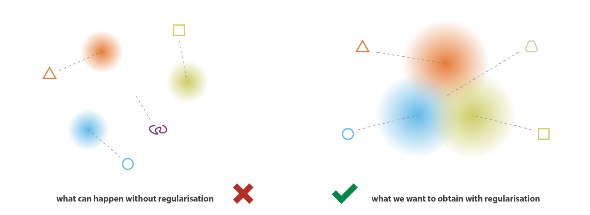
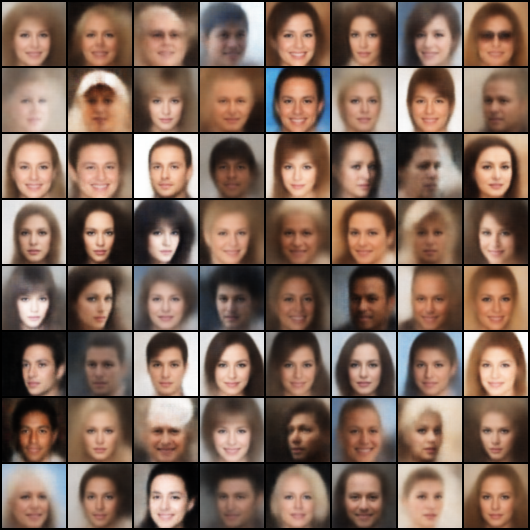

Variational Autoencoder
核心思想
VAE 是一种基于隐变量的生成模型，它将隐变量 \(\mathbf z\in\mathbb R^d\)（一般采自正态分布）映射到 \(\mathbf x\in\mathbb R^D\)，并希望 \(\mathbf x\) 的分布尽可能接近真实数据的分布。这个映射不是确定性的，可以写作概率分布 \(p_\theta(\mathbf x\vert \mathbf z)\)，其中 \(\theta\) 表示模型参数。于是，模型能够生成的所有样本的分布写作： \[ p_\theta(\mathbf x)=\int p_\theta(\mathbf x\vert \mathbf z)p(\mathbf z)\mathrm d\mathbf z \] 为了使得 VAE 生成真实样本的概率变大，考虑极大似然法： \[ L(\theta)=\mathbb E_{\mathbf x\sim p_\text{data}}[\log p_\theta(\mathbf x)]=\mathbb E_{\mathbf x\sim p_\text{data}}\left[\log\left(\int p_\theta(\mathbf x\vert \mathbf z)p(\mathbf z)\mathrm d\mathbf z\right)\right] \] 这与 EM 算法 的问题形式一模一样。简要回顾一下 EM 算法：
EM 算法：为样本 \(\mathbf x\) 对应的隐变量 \(\mathbf z\) 引入分布 \(q(\mathbf z\vert\mathbf x)\)，则最大化 \(L(\theta)\) 等价于最大化 ELBO： \[\max_{\theta,q}~\text{ELBO}(\theta,q)=\mathbb E_{\mathbf x\sim p_\text{data},\,\mathbf z\sim q(\mathbf z\vert\mathbf x)}\left[\log\frac{p_\theta(\mathbf x\vert\mathbf z)p(\mathbf z)}{q(\mathbf z\vert \mathbf x)}\right]\] 采用交替迭代的方式轮流优化 \(\theta\) 和 \(q\)：
- E-step：固定 \(\theta\) 优化 \(q\)，即 \(\max_q\text{ELBO}(\theta,q)\)，其最优解为取 \(q(\mathbf z\vert\mathbf x)=p_\theta(\mathbf z\vert\mathbf x)\)；
- M-step：固定 \(q\) 优化 \(\theta\)，即 \(\max_\theta\text{ELBO}(\theta,q)\)；
然而在 VAE 的问题背景下，后验分布 \(p_\theta(\mathbf z\vert\mathbf x)\) 是不可解 (intractable) 的，因此我们无法直接给出 E-step 的解析解。既然如此，我们只好去求 E-step 的数值解。不过，E-step 的优化变量是一个概率分布函数 \(q\)，并不好直接优化（用相关术语来讲，ELBO 是关于函数 \(q\) 的泛函，优化泛函的方法统称为变分法）。为了解决这个问题，我们将 \(q(\mathbf z\vert\mathbf x)\) 限制为以 \(\phi\) 为参数的某分布族 \(q_\phi(\mathbf z\vert\mathbf x)\)，这样优化变量就从函数 \(q\) 变成了参数 \(\phi\). 不过，由于我们限制了 \(q\) 的形式，所以即便能求出最优的参数 \(\phi\)，也大概率不是 E-step 的最优解。理论上，为了尽可能逼近最优解，我们应该让选取的分布族越复杂越好；但是分布越复杂，优化也越难进行，因此这里存在一个 trade-off.
在下文我们将看到，VAE 的 \(p_\theta(\mathbf x\vert \mathbf z)\) 和 \(q_\phi(\mathbf z\vert\mathbf x)\) 都由神经网络表示，因此我们只能用梯度下降来求解 E-step 和 M-step 的数值解。既然都是梯度下降，那就没有必要交替迭代了，直接两步合一步最大化 ELBO 即可： \[ \max_{\theta,\phi}~\text{ELBO}(\theta,\phi)=\mathbb E_{\mathbf x\sim p_\text{data},\,\mathbf z\sim q_\phi(\mathbf z\vert\mathbf x)}\left[\log\frac{p_\theta(\mathbf x\vert\mathbf z)p(\mathbf z)}{q_\phi(\mathbf z\vert \mathbf x)}\right] \] 取个负号并稍加变换，就得到了 VAE 的损失函数： \[ \mathcal L(\theta,\phi)=\mathbb E_{\mathbf x\sim p_\text{data}}\bigg[\underbrace{\mathbb E_{\mathbf z\sim q_\phi(\mathbf z\vert\mathbf x)}[-\log p_\theta(\mathbf x\vert \mathbf z)]}_\text{reconstruction}+\underbrace{\mathrm{KL}(q_\phi(\mathbf z\vert\mathbf x)\|p(\mathbf z))}_\text{KL regularization}\bigg] \] 可以看到，VAE 的损失函数由两部分构成：
- \(\mathbb E_{\mathbf z\sim q_\phi(\mathbf z\vert\mathbf x)}[-\log p_\theta(\mathbf x\vert \mathbf z)]\) 是重构项，最大化 \(\mathbf x\) 被重构的似然；
- \(\mathrm{KL}(q_\phi(\mathbf z\vert\mathbf x)\Vert p(\mathbf z))\) 可以视作正则项，让估计的后验分布逼近先验分布。
直观上，假设只有重构项，那么为了更好的重构，网络会尽可能地减小不确定性——一方面让分布 \(q_\phi(\mathbf z\vert\mathbf x)\) 的方差很小，基本集中在一个点上；另一方面对不同的 \(\mathbf x\) 让分布 \(q_\phi(\mathbf z\vert\mathbf x)\) 均值差异很大，以便更好地区分不同 \(\mathbf x\) 编码出来的 \(\mathbf z\)（如下左图所示）。如此一来，VAE 就退化成一般的 autoencoder 了；而正则项强制让 \(q_\phi(\mathbf z\vert\mathbf x)\) 逼近 \(p(\mathbf z)\)，一个我们预先设定的分布，就可以约束上述两点的发生（如下右图所示），所以两项存在一种“对抗”的感觉。

实例化
我们现在得到了 VAE 的损失函数，但其中的 \(p(\mathbf z)\)、\(p_\theta(\mathbf x\vert \mathbf z)\)、\(q_\phi(\mathbf z\vert\mathbf x)\) 具体是什么并没有说明。要真正落地，还需要把它们“实例化”。
Encoder 网络
首先考虑损失函数中的 KL 正则项。由于正态分布的 KL 散度相对来说好算一些，我们希望 \(p(\mathbf z)\) 和 \(q_\phi(\mathbf z\vert\mathbf x)\) 都是正态分布：
- \(p(\mathbf z)\)：简便起见，直接取为 \(\mathcal N(\mathbf 0,\mathbf I)\) 标准正态分布；
- \(q_\phi(\mathbf z\vert\mathbf x)\)：考虑到它依赖于 \(\mathbf x\)，所以应该是 \(\mathcal N(\mu_\phi(\mathbf x),\Sigma_\phi(\mathbf x))\) 的形式。可是 \(\mu_\phi(\mathbf x),\Sigma_\phi(\mathbf x)\) 用怎样的函数才好呢？在深度学习的时代，这种开放性问题就无脑上神经网络呗！这就是 VAE 中的 encoder 网络。
将实例化后的 \(p(\mathbf z)\) 与 \(q_\phi(\mathbf z\vert\mathbf x)\) 代入 KL 正则项，得到： \[ \begin{align} \mathrm{KL}(q_\phi(\mathbf z\vert\mathbf x)\|p(\mathbf z))&=\mathrm{KL}(\mathcal N(\mu_\phi(\mathbf x),\Sigma_\phi(\mathbf x))\|\mathcal N(\mathbf 0,\mathbf I))\\ &=\frac{1}{2}\left[\mathrm{tr}(\Sigma_\phi(\mathbf x))+\mu_\phi(\mathbf x)^\mathsf T\mu_\phi(\mathbf x)-d-\log\det(\Sigma_\phi(\mathbf x)) \right] \end{align} \] 实操时，我们一般会做进一步简化 \(\Sigma_\phi(\mathbf x)=\mathrm{diag}(\sigma_\phi^2(\mathbf x))\)，那么： \[ \begin{align} \mathrm{KL}(q_\phi(\mathbf z\vert\mathbf x)\|p(\mathbf z))&=\mathrm{KL}(\mathcal N(\mu_\phi(\mathbf x),\mathrm{diag}(\sigma_\phi^2(\mathbf x)))\| \mathcal N(\mathbf 0,\mathbf I))\\ &=\frac{1}{2}\sum_{i=1}^d\left(\mu_\phi^2(x)_i+\sigma_\phi^2(\mathbf x)_i-\log \sigma_\phi^2(\mathbf x)_i-1\right) \end{align} \] 一个实现上的小细节：由于方差一定非负，我们可以视 encoder 的输出为 \(\log \sigma_\phi^2(\mathbf x)\) 而非 \(\sigma_\phi^2(\mathbf x)\).
Decoder 网络
接下来考虑损失函数中的重构项，也就是生成模型 \(p_\theta(\mathbf x\vert \mathbf z)\) 的形式。根据问题背景的不同，有以下两种常见选择。
伯努利分布：输出只有 0/1，所以适用于生成二值数据（比如黑白图像）。设伯努利分布的参数为 \(\rho_\theta(\mathbf z)\in\mathbb [0,1]^D\)，那么： \[ p_\theta(x_i\vert z)=\begin{cases}\rho_\theta(\mathbf z)_i,&x_i=1\\1-\rho_\theta(\mathbf z)_i,&x_i=0\end{cases} \] 代入重构项： \[ -\log p_\theta(\mathbf x\vert \mathbf z)=-\sum_{i=1}^D\log p_\theta(x_i\vert\mathbf z)=\sum_{i=1}^D\left[-x_i\log \rho_\theta(\mathbf z)_i-(1-x_i)\log(1-\rho_\theta(\mathbf z)_i)\right] \] 即 BCELoss.
正态分布：设参数为 \(\mu_\theta(\mathbf z)\in\mathbb R^D,\Sigma_\theta(\mathbf z)\in\mathbb R^{D\times D}\)，那么： \[ p_\theta(\mathbf x\vert \mathbf z)=\frac{1}{(2\pi)^{D/2}|\Sigma_\theta(\mathbf z)|^{1/2}}\exp\left(-\frac{1}{2}(\mathbf x-\mu_\theta(\mathbf z))^T\Sigma_\theta^{-1}(\mathbf z)(\mathbf x-\mu_\theta(\mathbf z))\right) \] 代入重构项： \[ -\log p_\theta(\mathbf x\vert \mathbf z)=\frac{D}{2}\log(2\pi)+\frac{1}{2}\log|\Sigma_\theta(\mathbf z)|+\frac{1}{2}(\mathbf x-\mu_\theta(\mathbf z))^\mathsf T\Sigma_\theta^{-1}(\mathbf z)(\mathbf x-\mu_\theta(\mathbf z)) \] 实操时，我们一般会取 \(\Sigma_\theta(z)=\sigma^2I\)，即各分量独立且方差固定为某常数。那么： \[ -\log p_\theta(\mathbf x\vert \mathbf z)=\frac{D}{2}\log(2\pi)+\frac{D}{2}\log\sigma^2+\frac{1}{2\sigma^2}\|\mathbf x-\mu_\theta(\mathbf z)\|^2 \] 注意到前两项是定值，与优化无关，所以优化目标就是： \[ \frac{1}{2\sigma^2}\|\mathbf x-\mu_\theta(\mathbf z)\|^2 \] 即 MSELoss.
注意：上式中 \(\Vert\cdot\Vert^2\) 是欧氏距离，如果实现时直接用 nn.MSELoss 会对 CHW 维也取平均（假设在图像上训练），结果是实际欧氏距离的 \(1/CHW\)，导致重构项和 KL 项权重失衡。所以实现时要么只对 mini-batch 取平均、CHW 维求和，要么全取平均，但是 KL 项加个系数缩小。
与 encoder 网络同理，\(\rho_\theta(\mathbf z)\) 或者 \(\mu_\theta(\mathbf z)\) 直接由一个 decoder 网络得到。
至此我们算出了 \(-\log p_\theta(\mathbf x\vert \mathbf z)\). 注意损失函数里还要对 \(\mathbf z\) 取期望，所以理论上我们应该多次采样做蒙特卡洛估计，但实践中只需要采一个 \(\mathbf z\) 就足够了。
Loss 权重
考虑实践中最常用的设置：
- \(p(\mathbf z)\) 取 \(\mathcal N(\mathbf 0,\mathbf I)\)；
- \(q_\phi(\mathbf z\vert\mathbf x)\) 取 \(\mathcal N(\mu_\phi(\mathbf x),\Sigma_\phi(\mathbf x))\)，且 \(\Sigma_\phi(\mathbf x)=\mathrm{diag}(\sigma_\phi^2(\mathbf x))\)；
- \(p_\theta(\mathbf x\vert \mathbf z)\) 取 \(\mathcal N(\mu_\theta(\mathbf z),\Sigma_\theta(\mathbf z))\)，且 \(\Sigma_\theta(\mathbf z)=\sigma^2I\)，其中 \(\sigma^2\) 是事先取定的一个超参数。
那么根据前两小节的推导，损失函数是： \[ \mathcal L=\underbrace{\frac{1}{2\sigma^2}\|\mathbf x-\mu_\theta(\mathbf z)\|^2}_\text{reconstruction}+\underbrace{\frac{1}{2}\sum_{i=1}^d\left(\mu_\phi^2(\mathbf x)_i+\sigma_\phi^2(\mathbf x)_i-\log \sigma_\phi^2(\mathbf x)_i-1\right)}_\text{KL regularization},\quad \mathbf z\sim\mathcal N(\mu_\phi(\mathbf x),\text{diag}(\sigma_\phi^2(\mathbf x))) \] 可以看到，重构项和 KL 正则项由超参数 \(\sigma^2\) 加权。\(\sigma^2\) 越小，重构项权重越大，意味着结果更真实，但泛化性下降。一般直接取 \(\sigma^2=1\) 即可。
重参数化技巧
重参数化技巧在之前的文章中已经介绍过了，所以这里不再赘述。简单说来，就是现在 \(\mathbf z\) 是从 \(q_\phi(\mathbf z\vert\mathbf x)\sim\mathcal N(\mu_\phi(\mathbf x),\mathrm{diag}(\sigma_\phi^2(\mathbf x)))\) 中采样的，但梯度无法经过采样传播到参数 \(\phi\)。解决方法很简单，先从 \(\mathcal N(\mathbf 0,\mathbf I)\) 中采样 \(\mathbf z'\)，再计算 \(\mathbf z=\mu_\phi(\mathbf x)+\mathbf z'\cdot\sigma_\phi(\mathbf x)\) 即可。
代码实现
Github repo: https://github.com/xyfJASON/vaes-pytorch
放个结果：

参考资料
- 苏剑林. (Mar. 18, 2018). 《变分自编码器（一）：原来是这么一回事 》[Blog post]. Retrieved from https://spaces.ac.cn/archives/5253 ↩︎
- 苏剑林. (Mar. 28, 2018). 《变分自编码器（二）：从贝叶斯观点出发 》[Blog post]. Retrieved from https://spaces.ac.cn/archives/5343 ↩︎
- 原来VAE是这么回事（从EM到VAE） - 市井小民的文章 - 知乎 https://zhuanlan.zhihu.com/p/368959795 ↩︎
- EM的升级打怪之路：EM-变分EM-VAE（part1） - Young Zicon的文章 - 知乎 https://zhuanlan.zhihu.com/p/418203971 ↩︎
- VAE 的前世今生：从最大似然估计到 EM 再到 VAE - AI科技评论的文章 - 知乎 https://zhuanlan.zhihu.com/p/443540253 ↩︎
- Weng, Lilian. From Autoencoder to Beta-VAE. https://lilianweng.github.io/posts/2018-08-12-vae/ ↩︎
- Doersch, Carl. Tutorial on variational autoencoders. arXiv preprint arXiv:1606.05908 (2016). ↩︎
- Joseph Rocca. Understanding Variational Autoencoders (VAEs). https://towardsdatascience.com/understanding-variational-autoencoders-vaes-f70510919f73 ↩︎